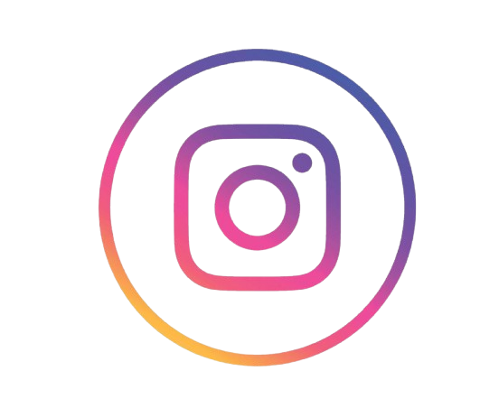

.png)
Nosso objetivo é oferecer soluções completas que unem desempenho, economia e tecnologia de ponta. Com serviços de manutenção especializados, fornecimento de componentes de alta qualidade e iniciativas como o Programa de Retorno, garantimos o suporte ideal tanto para clientes pessoa física quanto jurídica.Conte conosco para impulsionar a modernização dos seus equipamentos e o crescimento contínuo da sua estrutura tecnológica, sempre com foco em inovação, performance e evolução estratégica.
Porque escolher a digital zenith?
Na Digital Zenith, garantimos que sua empresa tenha acesso a soluções tecnológicas avançadas, seguras e sempre atualizadas. Nossa missão é manter sua infraestrutura funcionando com máxima eficiência e o mínimo de interrupções.
- Monitoramento remoto contínuo: Detectamos falhas antes que causem problemas, assegurando estabilidade e desempenho.
- Atualizações automáticas e proteção reforçada:Drivers e segurança sempre em dia para máxima proteção.
- Suporte técnico especializado e atendimento prioritário:Atendimento ágil, remoto ou presencial, para resolver imprevistos rapidamente.
- Vantagens exclusivas: Descontos em reparos e peças, reduzindo custos de manutenção.
- Renovação de equipamentos:Troque aparelhos antigos por acessórios novos, mantendo seus dispositivos sempre modernos.

Nossas redes: